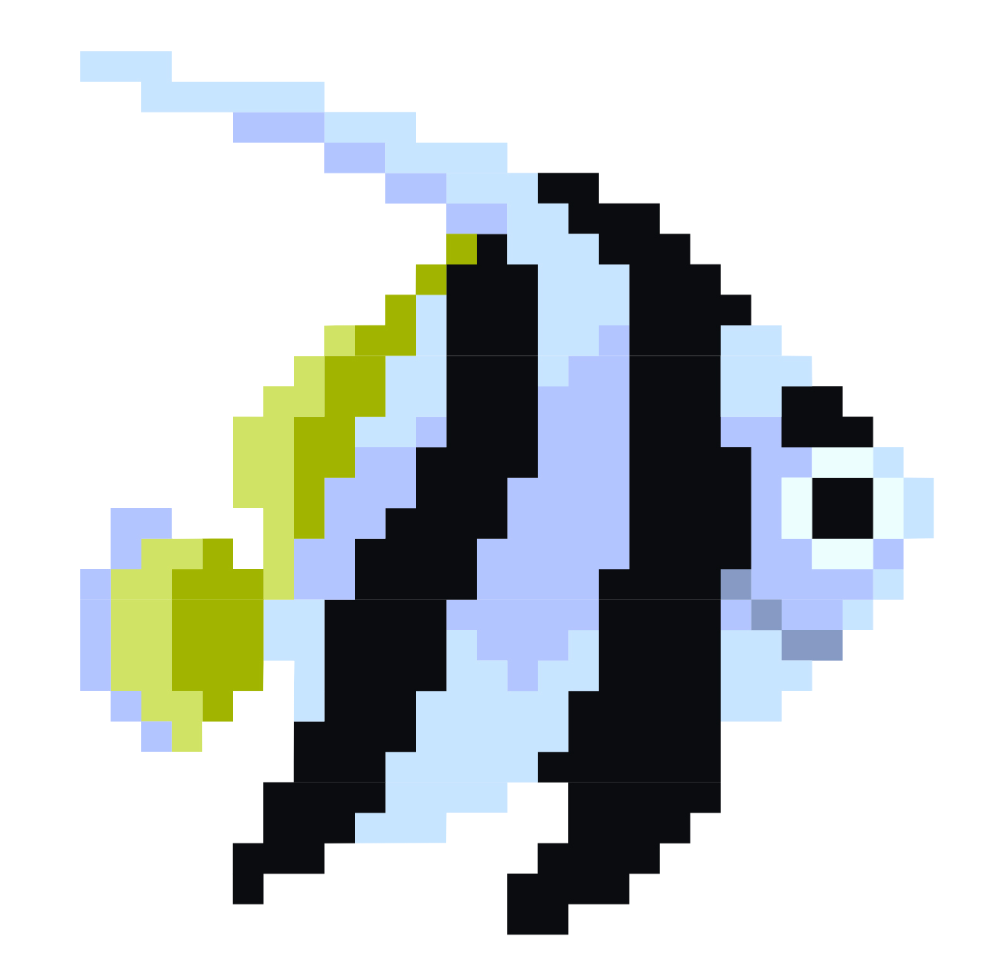
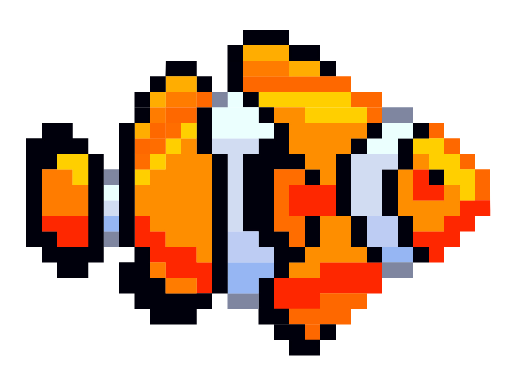
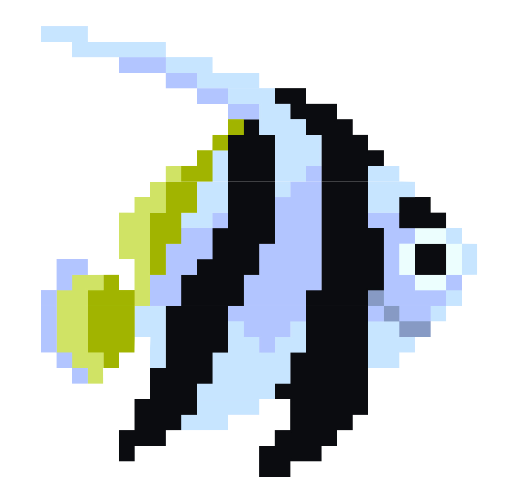
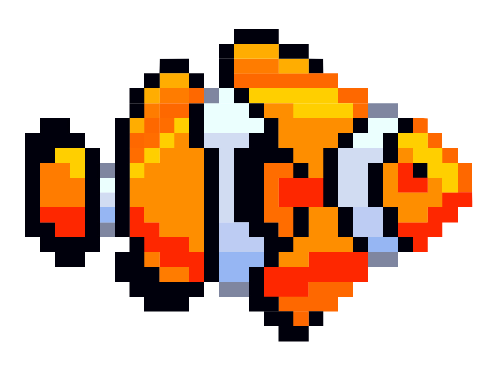
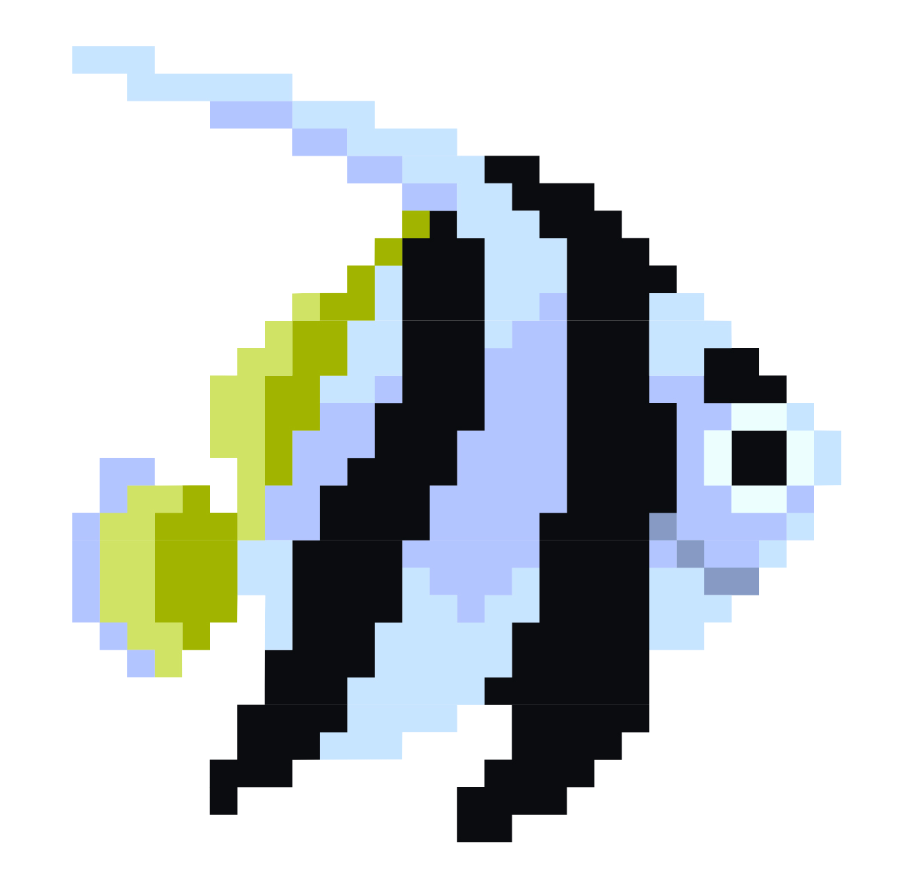
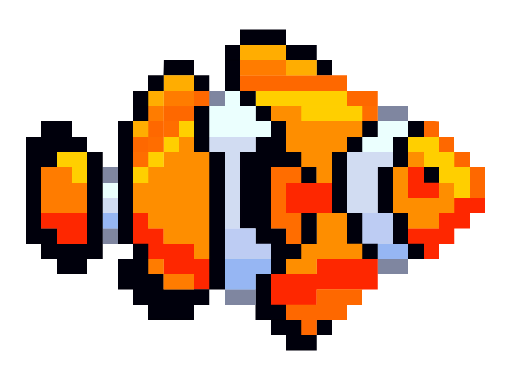

Googly Eyes
PImage face; int x; int y;
face = loadImage(“face.jpg”);
size(800,600); face.resize(width,height);
if(mousePressed){
println("Mouse’s x-position: " + mouseX + "\n" +
"Mouse’s y-position: " + mouseY + "\n");
}
x = mouseX; y = mouseY;
if (x<minX) {
x = minX;
}
if (x>maxX) {
x = maxX;
}

